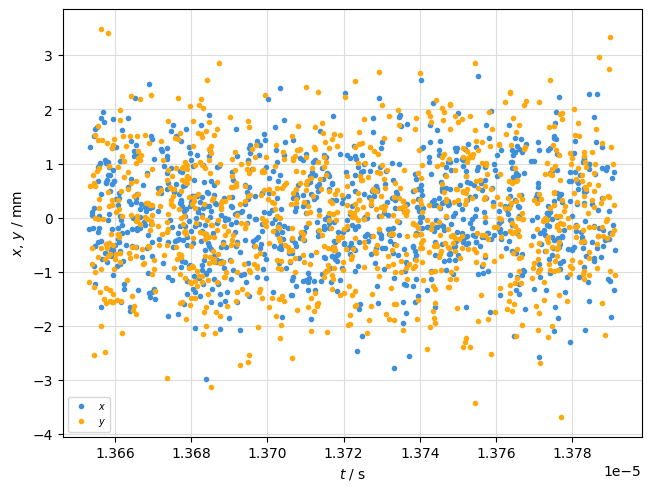
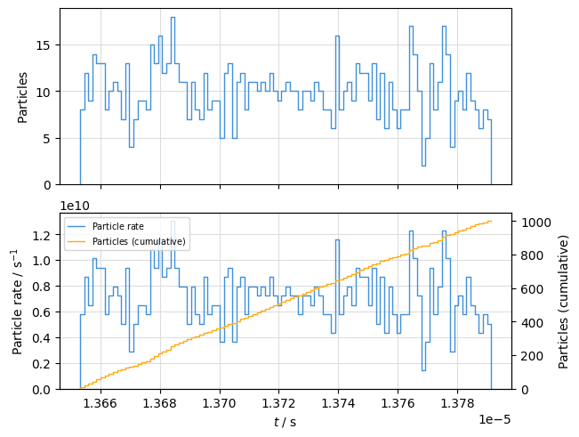
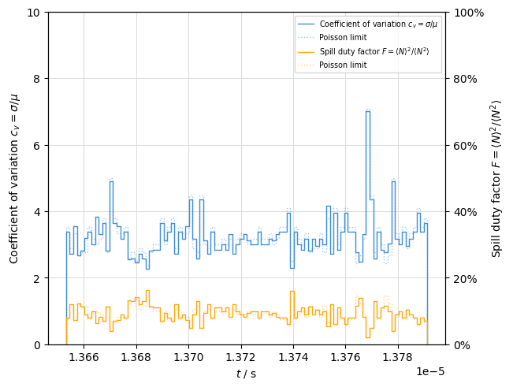
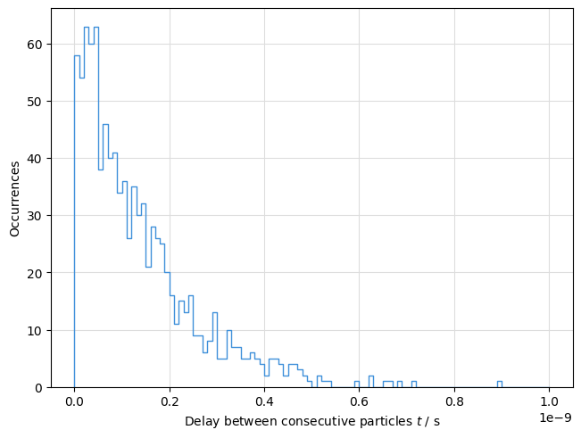
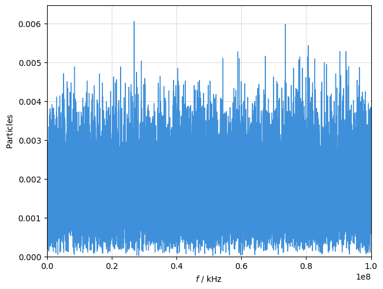
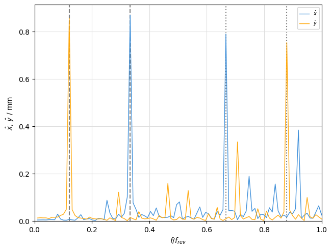
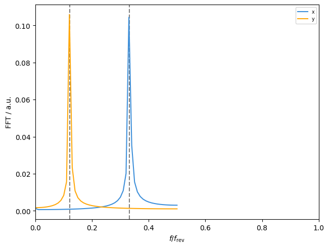

Particle timestructure#
For some applications it is important to consider the particle arrival time, taking the longitudinal coordinate zeta into account.
This includes non-circular lines, characterisation of extracted particle spills or long-term studies of coasting beams.
The particle arrival time is:
where the first term is only relevant for circular lines.
The plots in this guide are all based on the particle arrival time.
Show imports
import xtrack as xt
import xpart as xp
import xplt
import numpy as np
from matplotlib.animation import FuncAnimation
from IPython.display import display, HTML
np.random.seed(43543557)
Show line generation code
## Generate a simple 6-fold symmetric FODO lattice
n = 6
elements = []
for i in range(n):
elements.extend(
[
xt.Drift(length=0.7),
xt.Multipole(length=0.3, knl=[0, +0.63], ksl=[0, 0]),
xt.Drift(length=0.7),
xt.Multipole(length=0.5, knl=[np.pi / n], hxl=[np.pi / n]),
xt.Drift(length=0.4),
# xt.Multipole(length=0.2, knl=[0, 0, 0.5 * np.sin(2 * np.pi * (i / n))]),
xt.Drift(length=0.3),
xt.Multipole(length=0.3, knl=[0, -0.48], ksl=[0, 0]), # -0.4
xt.Drift(length=0.7),
xt.Multipole(length=0.5, knl=[np.pi / n], hxl=[np.pi / n]),
xt.Drift(length=2.2),
][:: -1 if i % 2 else 1]
)
line = xt.Line(elements=elements)
## Create the tracker
tracker = xt.Tracker(line=line)
Show particle generation code
## Generate particles
line.particle_ref = xp.Particles(mass0=xp.PROTON_MASS_EV, q0=1, p0c=1e9)
nparticles = int(1e3)
# Transverse distribution (gaussian)
norm_emitt_x = 2e-6 # normalized 1-sigma emittance in m*rad (=beta*gamma*emitt_x)
norm_emitt_y = 1e-6 # normalized 1-sigma emittance in m*rad (=beta*gamma*emitt_y)
x, px = xp.generate_2D_gaussian(nparticles)
y, py = xp.generate_2D_gaussian(nparticles)
# Longitudinal distribution (coasting beam)
rel_momentum_spread = 1e-4 # relative momentum spread ( P/p0 - 1 )
zeta = line.get_length() * np.random.uniform(-0.5, 0.5, nparticles)
delta = rel_momentum_spread * xp.generate_2D_gaussian(nparticles)[0]
particles = xp.build_particles(
tracker=tracker,
particle_ref=line.particle_ref,
x_norm=x,
px_norm=px,
nemitt_x=norm_emitt_x,
y_norm=y,
py_norm=py,
nemitt_y=norm_emitt_y,
method="4d", # for twiss (default is 6d, won't work without a cavity)
zeta=zeta,
delta=delta,
)
Show tracking code
## Twiss
tw = tracker.twiss(method="4d")
## Track
tracker.track(particles, num_turns=100, turn_by_turn_monitor=True)
Time based plot#
The TimePlot allows to plot any particle property as function of time
plot = xplt.TimePlot(particles, "x+y", circumference=line.get_length())

Binned time series#
The TimeBinPlot allows to plot particle counts or averaged properties as time series with a given resolution.
Thereby all particles arriving within the interval defined by the time resolution are counted or averaged over.
plot = xplt.TimeBinPlot(particles, "count,rate-cumulative", circumference=line.get_length())

The TimeVariationPlot provides metrices showing the fluctuation of particle numbers in the respective bins:
cv: Coefficient of variationduty: Spill duty factor
plot = xplt.TimeVariationPlot(particles, "cv-duty", circumference=line.get_length())
plot.axis_for(0).set(ylim=(0, 10))
plot.axis_for(twin=1).set(ylim=(0, 1));

Consecutive particle delay#
The TimeIntervalPlot allows analysis of the delay between consecutive particles.
plot = xplt.TimeIntervalPlot(particles, tmax=1e-9, log=False, circumference=10)

Frequency domain#
The TimeFFTPlot allows frequency analysis of particle data. Therefore the data is first binned into an equidistant time series as described above, and then an FFT is performed. This allows to plot the frequency spectrum of particle arrival time:
plot = xplt.TimeFFTPlot(particles, fmax=1e11, log=False, circumference=line.get_length())

Tune spectrum#
Simmilary, the frequency spectrum of transverse motion (betatron tune spectrum) can be plotted. Note that the spectrum is based on transverse position as function of time and not as function of turn (this gives access to frequencies above half the revolution frequency).
mask = (
0,
None,
) # select only a single particle, otherwise the tune signal is very small due to insufficient coherence of our beam
plot = xplt.TimeFFTPlot(
tracker.record_last_track, "x+y", relative=True, mask=mask, circumference=line.get_length()
)
for Q in (tw.qx, tw.qy):
q, h = np.modf(Q)
plot.ax.axvline(0 + q, ls="--", color="gray", zorder=-1)
plot.ax.axvline(1 - q, ls=":", color="gray", zorder=-1)

For reference, the spectrum of turn-by-turn positions:
Show code cell source
from matplotlib import pyplot as plt
fig, ax = plt.subplots()
for xy in "xy":
p = getattr(tracker.record_last_track, xy)[0, :]
freq = np.fft.rfftfreq(len(p))
mag = np.abs(np.fft.rfft(p))
ax.plot(freq, mag, label=xy)
ax.axvline(np.modf(getattr(tw, "q" + xy))[0], ls="--", color="gray", zorder=-1)
ax.legend()
ax.set(xlabel="$f/f_\\mathrm{rev}$", ylabel="FFT / a.u.", xlim=(0, 1));

See also